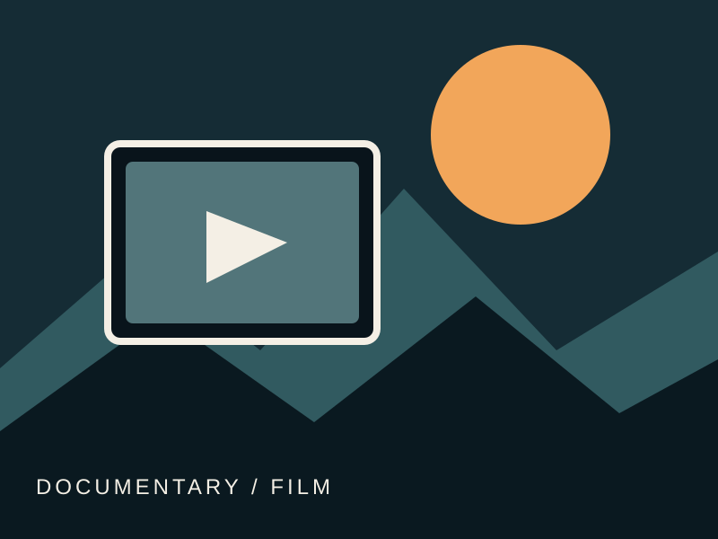
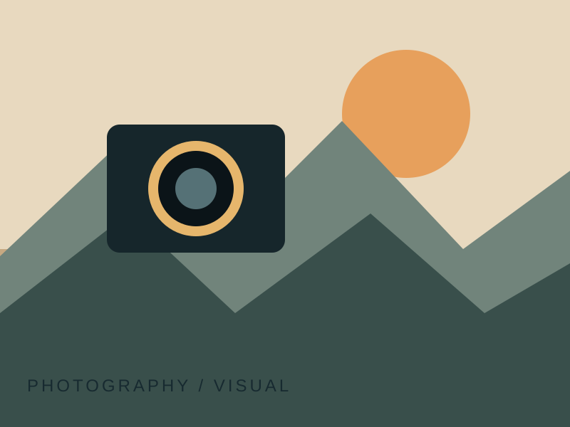
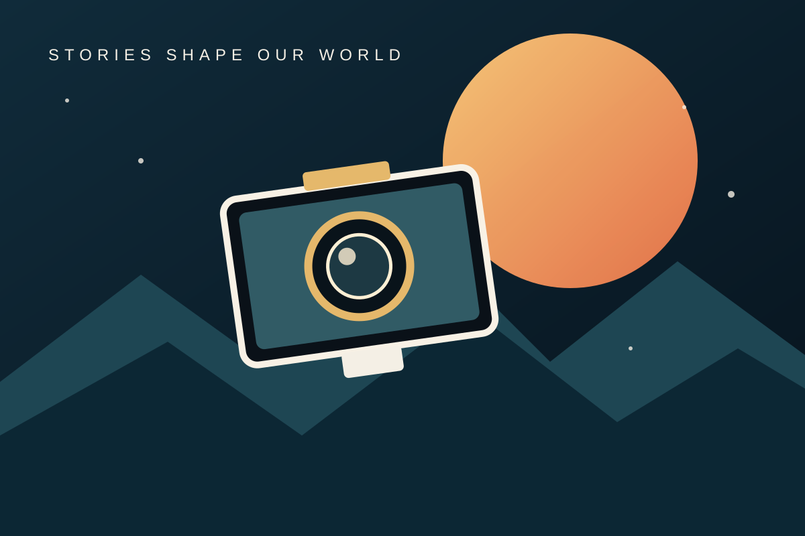

FILM地方的日常與記憶
以紀錄影像觀察生活現場，練習採訪、敘事結構與影像剪輯。
從影像紀錄、攝影創作到聲音敘事與數位內容，學生以不同媒介提出觀點、記錄現場，並讓故事與更多人產生連結。
依作品類型瀏覽。正式上架時，可將示意圖替換為學生作品縮圖，並在卡片內加入作品簡介、作者、年份與影片連結。

FILM以紀錄影像觀察生活現場，練習採訪、敘事結構與影像剪輯。

PHOTO透過構圖、光線與人物觀察，呈現地方空間與日常情感。
採集環境聲、訪談與聲音細節，練習以聲音建立場景與情緒。

DIGITAL整合資料整理、視覺設計與數位敘事，讓複雜議題更容易理解。
以尊重與傾聽為起點，呈現不同生命經驗與社區觀點。
為課堂專案、短影音、互動網頁或畢業成果預留展示空間。
這個版面可持續擴充為系上作品集。新增作品時，請將圖片或影片素材放進 graph 資料夾，並使用相對路徑連結。
返回系所首頁 ↗